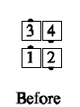
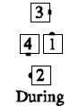
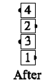

From a mini-wave box: Trailers Cross Extend, Cast 3/4 and Spread (becoming ends of a new wave), while leaders, as one smooth motion, 1/2 Box Circulate and Cross Run (working outside the others) to become the centers of a new wave.
  
© Copyright 1983, 1986-1988, 1995-2011 Bill Davis, John Sybalsky and CALLERLAB Inc., The International Association of Square Dance Callers. Permission to reprint, republish, and create derivative works without royalty is hereby granted, provided this notice appears. Publication on the Internet of derivative works without royalty is hereby granted provided this notice appears. Permission to quote parts or all of this document without royalty is hereby granted, provided this notice is included. Information contained herein shall not be changed nor revised in any derivation or publication.